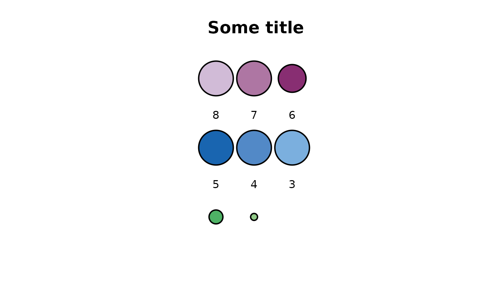
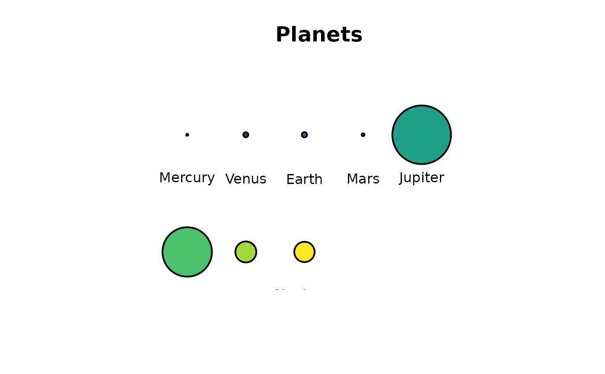
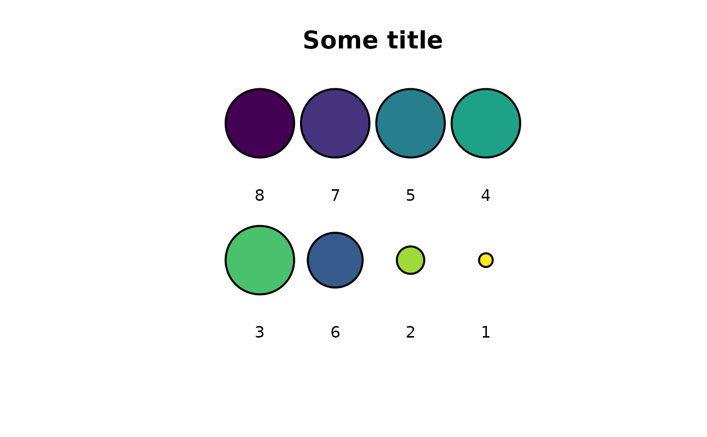

circlesplot(): Plots multiple circles with their given ratios
Source:R/circlesplot.R
circlesplot.Rd`circlesplot()` plots circles with a given diameter next to each other, so readers can observe the ratio between them.
Usage
circlesplot(
cp_vals = NULL,
cp_text = NULL,
cp_max = 10L,
cp_line_width = 2L,
cp_title = "",
cp_color = NULL,
cp_title_size = 1.5
)Arguments
- cp_vals
Vector (numeric)
- cp_text
Vector (characters)
- cp_max
Maximum number of circles in a row (integer)
- cp_line_width
Line-width of the circles (integer)
- cp_title
Title of the plot (String)
- cp_color
Vector of hex-colors for each circle
- cp_title_size
Size of the title (numeric or integer)
Examples
library('plotrix')
colors = c('#D1BBD7', '#AE76A3', '#882E72', '#1965B0', '#5289C7', '#7BAFDE', '#4EB265', '#90C987')
values = c(5,5,4,5,5,5,2,1)
text = c('8','7','6','5','4','3','2','1')
circlesplot(cp_vals=values, cp_text=text, cp_max=3L, cp_title="Some title", cp_color=colors)

# Proportions among planets
library('plotrix')
library("viridis")
#> Loading required package: viridisLite
planets = c('Mercury','Venus','Earth','Mars','Jupiter','Saturn','Uranus','Neptune')
diameter = c(4879.4,12103.6,12756.3,6792.4,142984,120536,51118,49528)
circlesplot(cp_vals=diameter, cp_text=planets, cp_max=5L, cp_title="Planets", cp_color=viridis(8))

# For coloring, you can also use viridis package:
library("viridis")
values = c(5,5,4,5,5,5,2,1)
text = c('8','7','6','5','4','3','2','1')
circlesplot(cp_vals=values, cp_text=text, cp_max=4L, cp_title="Some title", cp_color=viridis(8))
